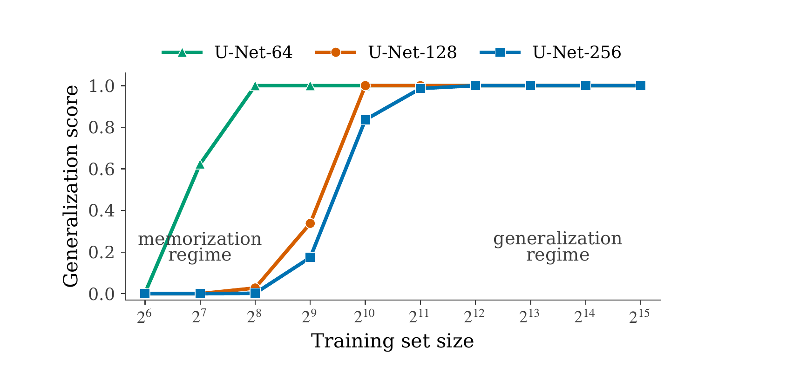
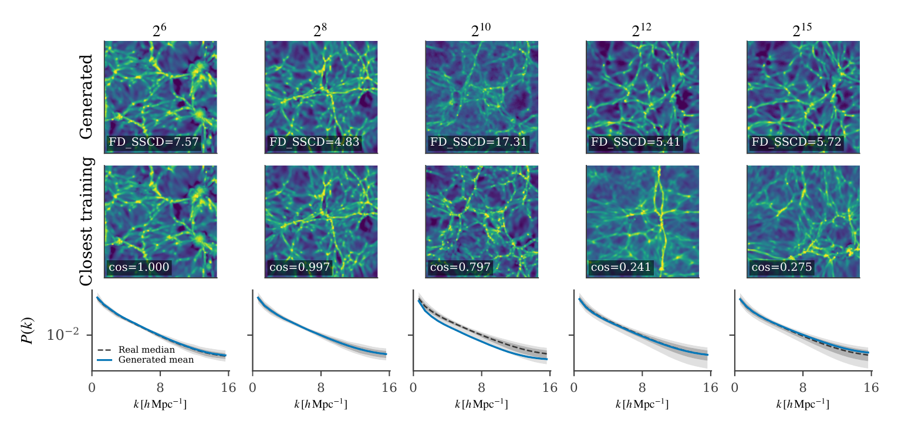
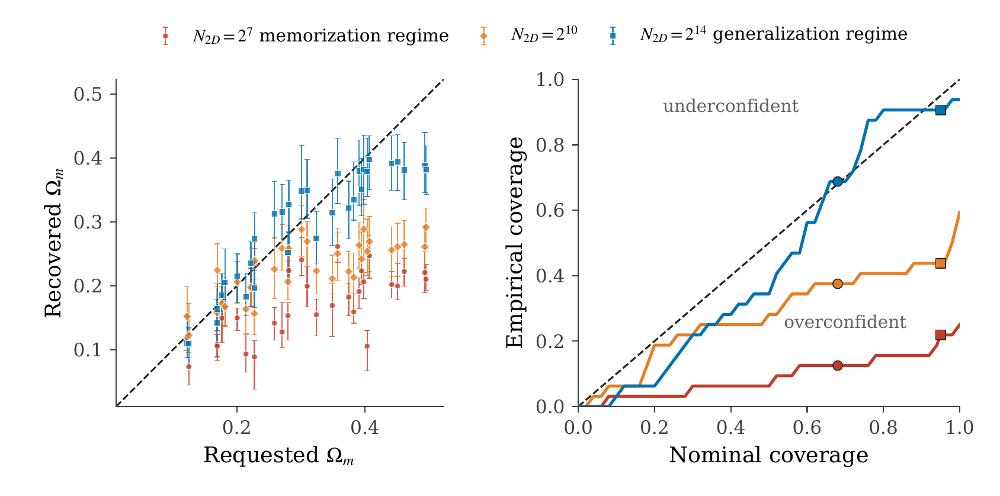

Three tests a cosmological diffusion model has to pass
Diffusion models are starting to be used as stand-ins for expensive cosmological simulations. The samples look right. The question Nick Kern and I asked in this paper is what "looks right" actually buys you, and the short answer is less than you would hope. A model can match the power spectrum while copying its training set, and it can produce novel fields while ignoring the cosmology you asked for.
Setup
The data are 128 × 128 neutral hydrogen maps from the IllustrisTNG runs in the CAMELS Multifield Dataset. Each map comes with six parameters, two cosmological (Ωm, σ8) and four astrophysical feedback strengths. I train attention U-Nets at three widths (U-Net-64, 128, 256) with a fixed budget of 200,000 optimizer updates each, and sweep the training-set size from 26 to 215 fields. Conditional models get the six parameters through cross-attention. The sweep is counted in 2D fields, not independent simulations, which matters because neighbouring slices of one simulation are far from independent.
Then I apply three separate tests to the samples. Each one answers a different question, and the paper is mostly about showing that passing one tells you little about the other two.
Test 1. Is the sample new?
For each generated map I find its closest training map in PCA feature space and record the cosine similarity. The generalization score G is the fraction of generated maps that are less similar to any training map than real training maps are to each other, using the 95th percentile of nearest-neighbour similarity within the training set as the threshold. So G ≈ 0 means the model is returning near-copies and G ≈ 1 means the samples are no closer to the training set than the training set is to itself.

The transition is sharp. For U-Net-128, G goes from 0.34 at 512 fields to 1 at 1024. U-Net-256 goes from 0.17 to 0.84 over the same doubling. The wider the network, the more data it needs before it stops copying, at least at this training budget. I would not read the exact crossover as a constant of nature; it depends on the architecture, the feature space, and how long you train. The practical point is that a nearest-neighbour check is cheap and tells you which regime you are in before you trust anything downstream.
One caveat the paper is explicit about. G is a novelty score, not a quality score. Pure noise would also get G = 1.
Test 2. Does the sample have the right statistics?
This is the test most people run first. I compare one-point distributions and power spectra between generated and real fields, and also compute a Fréchet distance in SSCD feature space (a self-supervised descriptor built for image copy detection). I normalize that distance by the distance between two disjoint sets of held-out real fields at the same sample size, so a value of one would mean "as far from real as real is from real".

Here is the result I find most useful. At 64 and 256 training fields the power spectra agree well with the real fields, and the generated maps are near-copies of training maps, with cosine similarities of 1.000 and 0.997 to their closest training example. Matching the power spectrum is easy if you are copying.
At 1024 fields, right around the novelty transition, agreement gets worse, not better. The power spectrum picks up a scale-dependent offset and the normalized SSCD distance jumps to 17.3, the largest of the five models shown. Past the transition, at 4096 and 32,768 fields, the power spectrum recovers and the distance falls to about 5.5. So the model goes through a stretch where it has stopped copying but has not yet learned the distribution. If you only checked the power spectrum at the small end of the sweep, you would have been happiest with the models that were copying.
Test 3. Does the sample respond to the cosmology you asked for?
This is the test that matters if you want to use the generator for inference. I train a frozen VGG16 encoder with a small MLP head to predict the six parameters from real fields. On held-out real maps it reaches R2 = 0.91 for Ωm, which is the parameter I report. Then I take 32 held-out cosmologies, generate 64 conditional fields for each, run them through the probe, and ask how often the requested Ωm falls inside the central 68% and 95% intervals of the recovered values.

At 128 training fields the recovered Ωm barely moves when the requested value changes. The intervals are narrow, which looks reassuring until you count how often they contain the truth. The nominal 68% and 95% intervals cover the requested value for 12.5% and 21.9% of the 32 cosmologies. At 1024 fields coverage is 37.5% and 43.8%. At 16,384 fields it reaches 68.8% and 90.6%, close to nominal.
The 1024-field number is the one to notice. In the unconditional sweep, U-Net-128 reaches G = 1 at exactly this size. The samples are novel by test 1 and still fail test 3 badly. Novelty does not imply that the conditioning is doing anything.
Two things to be careful about. These are recovery intervals across generated fields, not Bayesian credible intervals, so "undercoverage" here is a statement about the generator plus the probe, not about posterior calibration. And the probe can be wrong too. A high held-out R2 does not make it unbiased on generated fields, and separating generator error from probe error needs the same intervals computed on real fields at the same cosmologies, which we have not done yet.
What I take from it
The three tests measure different things and they disagree with each other at interesting places. Power spectra can look fine while the model copies. Novelty can be perfect while the conditioning is ignored. Distributional agreement dips right where novelty appears. None of this shows up if you look at samples by eye.
The honest scope of the paper is one simulation suite, one field type, one probe, and one training run per configuration, with no seed variation. The unconditional and conditional sweeps are also separate experiments, so I am not claiming all three criteria on the same models. What I am claiming is narrower and, I think, more useful. Before a diffusion model goes into a cosmological inference pipeline, run a nearest-neighbour check, a summary statistic check, and a conditional recovery check, and treat them as three tests rather than one.
The paper is on OpenReview and the code is at github.com/JiamingPan/diffusion-models-simulation-data. Questions or suggestions: jiamingp@umich.edu.